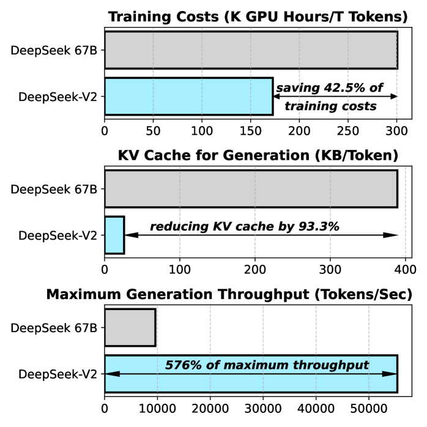
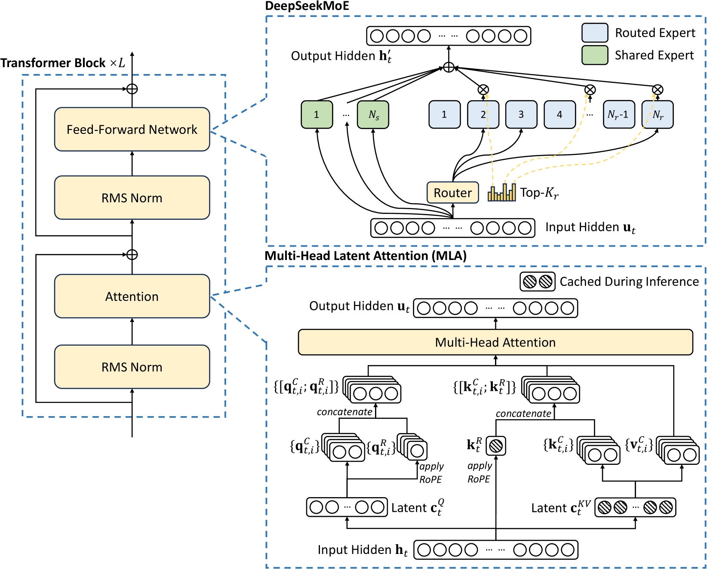

一引言：为什么需要 MLA
1.1 背景：大模型推理的成本瓶颈
大语言模型（LLM）的推理是自回归的：每生成一个新 token，都要把已有的全部上下文重新做一遍注意力。如果朴素实现，第 $t$ 步的计算量是 $O(t^2)$，生成 $N$ 个 token 的总代价将无法接受。
工程上的标准解法是 KV Cache：把每一步算出的 Key、Value 向量缓存在显存里，新 token 只需要和缓存中所有历史 K/V 做一次注意力即可。这样每步的计算量降为 $O(t)$，但代价是——
更关键的是，自回归解码每生成一个 token 都要把整份 KV Cache 从 HBM 读进计算单元——解码阶段是访存带宽受限（memory-bound）的。KV Cache 越大，单步延迟越高、吞吐越低。因此，压缩 KV Cache = 同时省显存 + 提速，一举两得。
1.2 现有解决方案概览
在 MLA 之前，业界主流的 KV Cache 压缩路线是「减少 K/V 头的数量」：
- MQA（Multi-Query Attention）：所有查询头共享同一份 K/V。Cache 降到 $1/n_h$，但效果损失明显；
- GQA（Grouped-Query Attention）：折中方案，每 $n_h/n_g$ 个头共享一份 K/V，被 LLaMA-2/3 等广泛采用。
这些方案的共同问题是：省显存和保效果是零和博弈——压缩越狠，能力掉得越多。
1.3 MLA 的定位
MLA（Multi-head Latent Attention，多头潜在注意力）由 DeepSeek-V2（2024 年 5 月，arXiv:2405.04434）提出，思路完全不同：不砍头数，而是对所有头的 K/V 做低秩联合压缩，缓存一个远小于原始 K/V 的「潜在向量」（latent vector）。
其结果是在 DeepSeek-V2 上实现了：

二前置知识回顾
2.1 标准多头注意力（MHA）与 KV Cache
设隐藏维度为 $d$，注意力头数为 $n_h$，每头维度 $d_h$（$d = n_h d_h$）。对位置 $t$ 的输入 $\mathbf{h}_t \in \mathbb{R}^d$，MHA 的计算为：
$$ \mathbf{q}_{t,i} = \mathbf{h}_t W_i^{Q}, \quad \mathbf{k}_{t,i} = \mathbf{h}_t W_i^{K}, \quad \mathbf{v}_{t,i} = \mathbf{h}_t W_i^{V}, \quad i = 1, \dots, n_h $$ $$ \mathbf{o}_{t,i} = \sum_{j=1}^{t} \mathrm{softmax}_j\!\left(\frac{\mathbf{q}_{t,i} \mathbf{k}_{j,i}^{\top}}{\sqrt{d_h}}\right) \mathbf{v}_{j,i}, \qquad \mathbf{u}_t = \left[\mathbf{o}_{t,1}; \dots; \mathbf{o}_{t,n_h}\right] W^{O} $$其中 $W_i^{Q}, W_i^{K}, W_i^{V} \in \mathbb{R}^{d \times d_h}$，$W^O \in \mathbb{R}^{d \times d}$。
推理时，所有历史位置的 $\mathbf{k}_{j,i}, \mathbf{v}_{j,i}$ 都要缓存。每 token、每层的 KV Cache 元素数为：
$$ \boxed{\ \mathrm{Cache}_{\mathrm{MHA}} = 2 \, n_h \, d_h\ } $$2.2 MQA 与 GQA
MQA 让全部 $n_h$ 个查询头共享一份 K/V（Cache = $2 d_h$）；GQA 把 $n_h$ 个头分成 $n_g$ 组，组内共享（Cache = $2 n_g d_h$）。三种机制的对比：
2.3 低秩分解基础
一个 $d \times d$ 的满秩矩阵 $W$ 可以近似为两个小矩阵之积：$W \approx AB$，其中 $A \in \mathbb{R}^{d \times r}$，$B \in \mathbb{R}^{r \times d}$，$r \ll d$。参数量从 $d^2$ 降到 $2dr$。这正是 LoRA 的核心思想，直觉是：高维数据的有效信息往往集中在一个低维子空间里。
MLA 把同样的思想用在 KV Cache 上：K 和 V 并不需要各自独立缓存——它们由同一个输入 $\mathbf{h}_t$ 生成，本身高度相关，可以被压缩到一个共享的低维潜在向量里，用时再「展开」回来。
三MLA 的核心原理
先看 DeepSeek-V2 论文的官方架构图（右下部分即 MLA）：

3.1 核心思想：缓存「潜在向量」而不是 K/V 本身
一句话概括 MLA：
3.2 数学推导：KV 低秩联合压缩
设压缩后潜在维度为 $d_c$（DeepSeek-V2 中 $d_c = 4 d_h = 512$，而 $n_h d_h = 128 \times 128 = 16384$）。
第一步：下投影（压缩）。
$$ \mathbf{c}_t^{KV} = W^{DKV}\, \mathbf{h}_t \in \mathbb{R}^{d_c} $$$W^{DKV} \in \mathbb{R}^{d_c \times d}$ 是下投影矩阵（D = Down）。这一步在推理时只做一次，结果写入 Cache。
第二步：上投影（解压），为每个头还原 K 和 V。
$$ \mathbf{k}_{t,i}^{C} = W_i^{UK}\, \mathbf{c}_t^{KV}, \qquad \mathbf{v}_{t,i}^{C} = W_i^{UV}\, \mathbf{c}_t^{KV} $$$W_i^{UK}, W_i^{UV} \in \mathbb{R}^{d_h \times d_c}$ 是第 $i$ 个头的上投影矩阵（U = Up）。注意上标 C 表示 Compressed（压缩路径），后面还会有 RoPE 路径。
Q 侧同样压缩（为了减少训练时的激活显存，对 Cache 大小无影响）：
$$ \mathbf{c}_t^{Q} = W^{DQ}\, \mathbf{h}_t \in \mathbb{R}^{d_c'}, \qquad \mathbf{q}_{t,i}^{C} = W_i^{UQ}\, \mathbf{c}_t^{Q} $$对比一下参数量：标准 MHA 的 $W^K, W^V$ 共 $2d^2$ 个参数；MLA 的压缩路径参数为 $d_c d + 2 n_h d_h d_c$。以 DeepSeek-V2 配置（$d=5120, d_c=512, n_h d_h = 16384$）计：MHA 约 52.4M 参数，MLA 约 19.4M 参数——参数也更少。
3.3 矩阵吸收（Matrix Absorption）—— 最精妙的一步
上面的推导有一个显而易见的问题：推理时还要把 $\mathbf{c}_t^{KV}$ 解压回每个头的 $\mathbf{k}, \mathbf{v}$，岂不是又要算又占算力？MLA 的答案是：根本不用解压。
展开注意力分数（先忽略 RoPE 和 softmax 的缩放）：
$$ \mathbf{q}_{t,i}^{C} \cdot \mathbf{k}_{j,i}^{C} = \left(W_i^{UQ} \mathbf{c}_t^{Q}\right)^{\top} \left(W_i^{UK} \mathbf{c}_j^{KV}\right) = \left(\mathbf{c}_t^{Q}\right)^{\top} \underbrace{\left(W_i^{UQ}\right)^{\top} W_i^{UK}}_{\text{可离线预先合并}}\; \mathbf{c}_j^{KV} $$中间那个矩阵 $\left(W_i^{UQ}\right)^{\top} W_i^{UK} \in \mathbb{R}^{d_c' \times d_c}$ 只由权重构成，推理前就可以合并成一个矩阵。于是：
- Q 侧：$\tilde{\mathbf{q}}_{t,i} = \left(\left(W_i^{UQ}\right)^{\top} W_i^{UK}\right)^{\top} \mathbf{c}_t^{Q}$，维度 $d_c$；
- K 侧：直接用缓存的 $\mathbf{c}_j^{KV}$ 本身，无需上投影。
3.3.1 吸收到哪一侧？结合律的账本
推理时要计算当前查询与全部历史键的点积 $q_i \cdot k_1, q_i \cdot k_2, \dots, q_i \cdot k_n$，其中每一项：
$$ q_i^{\top} k_j = q_i^{\top} \left(W^{UK} \mathbf{c}_j^{KV}\right) = \left(q_i^{\top} W^{UK}\right) \mathbf{c}_j^{KV} $$矩阵乘法满足结合律，但两种结合顺序的代价天差地别（代入 DeepSeek-V2 维度：$q_i^{\top}$ 为 $1 \times 16384$，$W^{UK}$ 为 $16384 \times 512$，$\mathbf{c}_j^{KV}$ 为 $512 \times 1$）：
| 方案 A：合并进 Key 侧 | 方案 B：合并进 Query 侧（MLA 的选择） | |
|---|---|---|
| 步骤 ①（大矩阵乘） | 每个历史 token 都要算 $W^{UK}\mathbf{c}_j^{KV}$（$16384 \times 512$ 矩阵乘向量） | 整个解码步只算 1 次 $q_i^{\top}W^{UK}$（$1 \times 16384$ 乘 $16384 \times 512$） |
| 步骤 ②（点积） | 每个历史 token 再算 $q_i^{\top}(\cdots)$（$16384$ 维点积） | 每个历史 token 只算 $(\cdots)\,\mathbf{c}_j^{KV}$（$512$ 维点积） |
| $n = 100$ 个历史 token | 昂贵的大矩阵乘 ① 重复 100 次 | ① 只做 1 次，约省 100 倍计算量 |
所以 MLA 选择方案 B：昂贵的合并矩阵乘只对当前 Query 做一次，历史 token 侧永远只接触 512 维的压缩向量。低秩压缩负责省显存，选对边的矩阵吸收负责省算力——两者叠加，才同时解决了 1.1 节的两个瓶颈。
3.3.2 Value 吸收：输出侧的同样把戏
softmax 之后的加权求和，可以把 $W^{UV}$ 同样提到求和号外面：
$$ \mathbf{o}_{t,i} = \sum_{j} A(i,j)\, \mathbf{v}_{j,i}^{C} = \sum_{j} A(i,j)\, W_i^{UV} \mathbf{c}_j^{KV} = W_i^{UV} \underbrace{\sum_{j} A(i,j)\, \mathbf{c}_j^{KV}}_{512\ \text{维}} $$即先对 512 维的压缩向量加权求和，最后一次性上投影，而不是先把每个 $\mathbf{v}_j$ 解压成 16384 维再加权。再乘输出矩阵 $W^O$ 时，$W_i^{UV}$ 又可以被 $W^O$ 吸收：
$$ \mathbf{u}_t = W^{O}\, \mathbf{o}_{t,i} = \underbrace{\left(W^{O} W_i^{UV}\right)}_{\text{可离线预先合并}}\; \sum_{j} A(i,j)\, \mathbf{c}_j^{KV} $$至此可以看到矩阵吸收的完整图景：推理时的 MLA 在计算上等价于一个「Q 头维度 = $d_c$、K/V 共享为 $\mathbf{c}^{KV}$」的 MQA，计算量和访存量都极小。
3.4 解耦 RoPE（Decoupled RoPE）
故事还剩一个漏洞：RoPE 位置编码。RoPE 要作用在 $\mathbf{q}, \mathbf{k}$ 上：
$$ \mathbf{q}_{t,i} \cdot \mathbf{k}_{j,i} = \left(\mathrm{RoPE}_t(W_i^{UQ}\mathbf{c}_t^{Q})\right)^{\top} \left(\mathrm{RoPE}_j(W_i^{UK}\mathbf{c}_j^{KV})\right) $$RoPE 是一个依赖位置 $j$ 的旋转矩阵，插在 $W^{UK}$ 和 $\mathbf{c}_j^{KV}$ 之间：$\mathrm{RoPE}_j\, W_i^{UK}\, \mathbf{c}_j^{KV}$。由于 $\mathrm{RoPE}_j$ 逐位置不同，它无法被吸进离线合并的矩阵里——矩阵吸收失效了。
MLA 的解决方案是解耦：位置信息不走压缩路径，单独开一条小路：
$$ \mathbf{k}_t^{R} = \mathrm{RoPE}_t\!\left(W^{KR} \mathbf{h}_t\right) \in \mathbb{R}^{d_h^{R}} $$$W^{KR} \in \mathbb{R}^{d_h^R \times d}$，所有头共享这一个 RoPE 键（MQA 式），$d_h^R = 64$。
Q 侧也对应生成 $\mathbf{q}_{t,i}^{R} = \mathrm{RoPE}_t(W_i^{QR} \mathbf{c}_t^{Q})$，然后拼接：
$$ \mathbf{q}_{t,i} = \left[\mathbf{q}_{t,i}^{C};\ \mathbf{q}_{t,i}^{R}\right], \qquad \mathbf{k}_{t,i} = \left[\mathbf{k}_{t,i}^{C};\ \mathbf{k}_t^{R}\right] $$注意力分数自然拆成两部分：压缩部分（可矩阵吸收，语义内容）+ RoPE 部分（共享，位置信息）：
$$ \mathbf{q}_{t,i} \cdot \mathbf{k}_{j,i} = \underbrace{\left(W_i^{UQ}\mathbf{c}_t^{Q}\right)^{\top}\!\! W_i^{UK} \mathbf{c}_j^{KV}}_{\text{内容，可吸收}} + \underbrace{\left(\mathbf{q}_{t,i}^{R}\right)^{\top} \mathbf{k}_j^{R}}_{\text{位置}} $$3.5 完整推理流程图
把推理时一个 token 的完整流程按顺序写出来：
- 计算 $\mathbf{c}_t^{KV} = W^{DKV}\mathbf{h}_t$ 和 $\mathbf{k}_t^R = \mathrm{RoPE}_t(W^{KR}\mathbf{h}_t)$，追加写入 Cache（共 $d_c + d_h^R$ 个元素）；
- 计算 $\mathbf{c}_t^{Q} = W^{DQ}\mathbf{h}_t$，再经被吸收的上投影得到内容查询 $\tilde{\mathbf{q}}_{t,i}$（$d_c$ 维/头）；
- 计算 RoPE 查询 $\mathbf{q}_{t,i}^R = \mathrm{RoPE}_t(W_i^{QR}\mathbf{c}_t^Q)$；
- 与 Cache 中所有历史 $\mathbf{c}_j^{KV}, \mathbf{k}_j^R$ 计算分数：内容分 + 位置分，softmax；
- 用权重对 $\mathbf{c}_j^{KV}$ 加权求和，结果被 $W_i^{UV}$ 与 $W^O$ 的合并矩阵吸收，直接得到输出 $\mathbf{u}_t$。
作为对照，训练模式不做矩阵吸收，K、V、Q 都显式地从压缩向量解压出来再算注意力（反向传播需要独立的上投影梯度）：
四MLA 与其他注意力机制的定量对比
4.1 用 DeepSeek-V2 的实际配置算一笔账
DeepSeek-V2 的配置：$d = 5120$，$n_h = 128$，$d_h = 128$，$d_c = 512$，$d_h^R = 64$，层数 $L = 60$。各机制每 token 每层需要缓存的元素数：
| 机制 | Cache 公式 | 每 token 每层元素数 | 相对 MHA | 效果（相对 MHA） |
|---|---|---|---|---|
| MHA | $2 n_h d_h$ | 32,768 | 100% | 基准 |
| GQA（8 组） | $2 n_g d_h$ | 2,048 | 6.25% | 轻微下降 |
| GQA（2.5 组） | $2 n_g d_h$ | ≈ 640 | ≈ 2% | 明显下降 |
| MQA | $2 d_h$ | 256 | 0.78% | 显著下降 |
| MLA | $d_c + d_h^R$ | 576 | 1.76% | 不降反升 |
换算到整模型：MLA 每 token 共 $576 \times 60 = 34{,}560$ 个元素，bf16 存储约 67.5 KB/token；128K 上下文单序列约 8.6 GB。若用 MHA 则需约 3.8 MB/token，128K 上下文高达 480 GB——这就是为什么论文报告 KV Cache 降低 93.3%、最大吞吐提升 5.76 倍（见图 1-1）。
4.2 为什么 MLA 效果不降反升？
- 结构化正则：低秩瓶颈强制所有头的 K/V 从共享的低维表示中生成，等价于对注意力施加了强结构约束，减少了过拟合与冗余参数；
- 训练-推理不一致的双赢：训练时每个头有独立上投影（表达力 ≥ MHA 的低秩版本），推理时矩阵吸收带来 MQA 的效率；
- 参数效率：省下的参数预算可以让给 FFN/MoE，同等总参数下模型整体更强。
五PyTorch 代码实现
5.1 从零实现 MLA（逐行注释版）
下面是一份教学版 MLA，包含两种计算路径：forward_train（展开计算，便于理解，对应论文公式）和 forward_infer（矩阵吸收 + KV Cache，对应真实推理）。两者数学上等价。
# mla.py —— 教学版 Multi-head Latent Attention # 维度记号：d=隐藏维, n_h=头数, d_h=头维, d_c=KV压缩维, d_cq=Q压缩维, d_r=解耦RoPE维 import math import torch import torch.nn as nn import torch.nn.functional as F def apply_rope(x, cos, sin): # x: (B, T, n_h, d_r)；cos/sin: (T, d_r//2)。标准旋转位置编码 x1, x2 = x.chunk(2, dim=-1) y1 = x1 * cos[None, :, None, :] - x2 * sin[None, :, None, :] y2 = x1 * sin[None, :, None, :] + x2 * cos[None, :, None, :] return torch.cat([y1, y2], dim=-1) class MLA(nn.Module): def __init__(self, d=1024, n_h=16, d_h=64, d_c=128, d_cq=192, d_r=32): super().__init__() self.n_h, self.d_h, self.d_c, self.d_r = n_h, d_h, d_c, d_r # ---------- KV 压缩路径 ---------- self.W_DKV = nn.Linear(d, d_c, bias=False) # 下投影: h -> c^KV self.W_UK = nn.Linear(d_c, n_h * d_h, bias=False) # K 上投影: c^KV -> k^C（所有头） self.W_UV = nn.Linear(d_c, n_h * d_h, bias=False) # V 上投影: c^KV -> v^C # ---------- Q 压缩路径 ---------- self.W_DQ = nn.Linear(d, d_cq, bias=False) # h -> c^Q self.W_UQ = nn.Linear(d_cq, n_h * d_h, bias=False) # c^Q -> q^C # ---------- 解耦 RoPE 路径 ---------- self.W_KR = nn.Linear(d, d_r, bias=False) # 共享 RoPE 键: h -> k^R self.W_QR = nn.Linear(d_cq, n_h * d_r, bias=False) # RoPE 查询: c^Q -> q^R self.W_O = nn.Linear(n_h * d_h, d, bias=False) self.scale = 1.0 / math.sqrt(d_h + d_r) # 拼接后总维度缩放 # ============ 训练/理解用：展开计算 ============ def forward_train(self, h, cos, sin): B, T, _ = h.shape c_kv = self.W_DKV(h) # (B,T,d_c) ← 推理时只需缓存它和 k^R c_q = self.W_DQ(h) # (B,T,d_cq) k = self.W_UK(c_kv).view(B, T, self.n_h, self.d_h) # 解压 K v = self.W_UV(c_kv).view(B, T, self.n_h, self.d_h) # 解压 V q = self.W_UQ(c_q).view(B, T, self.n_h, self.d_h) # 解压 Q k_r = apply_rope(self.W_KR(h).unsqueeze(2), cos, sin) # (B,T,1,d_r) 共享 q_r = apply_rope(self.W_QR(c_q).view(B, T, self.n_h, self.d_r), cos, sin) q = torch.cat([q, q_r], dim=-1).transpose(1, 2) # (B,n_h,T,d_h+d_r) k = torch.cat([k, k_r.expand(-1, -1, self.n_h, -1)], -1).transpose(1, 2) # 注意力（因果掩码） attn = (q @ k.transpose(-1, -2)) * self.scale mask = torch.triu(torch.ones(T, T, device=h.device, dtype=torch.bool), 1) attn = attn.masked_fill(mask, float('-inf')).softmax(-1) o = attn @ v.transpose(1, 2) # (B,n_h,T,d_h) return self.W_O(o.transpose(1, 2).reshape(B, T, -1)) # ============ 推理用：矩阵吸收 + Cache ============ def forward_infer(self, h, cos, sin, cache): # h: (B, 1, d) 单步解码；cache: dict(c_kv, k_r) 累积历史 B = h.shape[0] c_kv = self.W_DKV(h) # (B,1,d_c) ★ 写入 cache k_r = apply_rope(self.W_KR(h).unsqueeze(2), cos, sin) # (B,1,1,d_r) ★ 写入 cache cache['c_kv'] = torch.cat([cache['c_kv'], c_kv], 1) if cache['c_kv'] is not None else c_kv cache['k_r'] = torch.cat([cache['k_r'], k_r], 1) if cache['k_r'] is not None else k_r c_q = self.W_DQ(h) # (B,1,d_cq) # ★ 矩阵吸收：把 W_UK 吸进 Q 侧。W_UK: (d_c, n_h*d_h) -> 每头 (d_h, d_c) W_UK = self.W_UK.weight.view(self.n_h, self.d_h, self.d_c) W_UQ = self.W_UQ.weight.view(self.n_h, self.d_h, -1) # (n_h, d_h, d_cq) W_absorbed = torch.einsum('hdc,hdq->hqc', W_UK, W_UQ) # (n_h, d_cq, d_c)，可离线预计算 q_c = torch.einsum('bq,hqc->bhc', c_q.squeeze(1), W_absorbed) # (B,n_h,d_c) q_r = apply_rope(self.W_QR(c_q).view(B, 1, self.n_h, self.d_r), cos, sin).squeeze(1) ck = cache['c_kv'] # (B,S,d_c)，S=历史长度 kr = cache['k_r'].squeeze(2) # (B,S,d_r) # 内容分（无需解压 K！）+ 位置分 scores = torch.einsum('bhc,bsc->bhs', q_c, ck) \ + torch.einsum('bhr,bsr->bhs', q_r, kr) attn = (scores * self.scale).softmax(-1) # (B,n_h,S) # 对 c^KV 加权求和，输出侧由 W_UV 与 W_O 合并吸收 o_latent = torch.einsum('bhs,bsc->bhc', attn, ck) # (B,n_h,d_c) W_UV = self.W_UV.weight.view(self.n_h, self.d_h, self.d_c) W_O = self.W_O.weight # (d, n_h*d_h) W_VO = W_O.view(-1, self.n_h, self.d_h) # (d, n_h, d_h) W_out = torch.einsum('dhs,shc->dhc', W_VO, W_UV.permute(0, 2, 1)) # (d, n_h, d_c) return torch.einsum('bhc,dhc->bd', o_latent, W_out).unsqueeze(1)
5.2 常见坑
- RoPE 只作用于解耦部分：$\mathbf{q}^C, \mathbf{k}^C$（压缩路径）不加 RoPE，只给 $\mathbf{q}^R, \mathbf{k}^R$ 加。加错了矩阵吸收就会失效，而且两种错误在训练 loss 上都不容易立刻暴露；
- 缩放系数用拼接后的总维度：$\sqrt{d_h + d_h^R}$，不是 $\sqrt{d_h}$；
- 训练时不能合并矩阵：$\left(W^{UQ}\right)^{\top}W^{UK}$ 只在推理部署时合并。训练时合并会让两个矩阵失去独立梯度，等价于把参数化方式改掉，效果会变差；
- Cache 里存的是 $\mathbf{c}^{KV}$ 和 $\mathbf{k}^R$，不是解压后的 K/V——初学者最常见的实现错误；
- 数值检查清单：用
forward_train和单步循环的forward_infer跑同一输入，输出应逐位接近（误差 < 1e-4），这是验证矩阵吸收推导正确性的最快方法。
生产级实现可参考 DeepSeek 官方开源仓库（DeepSeek-V2 / V3 的 model.py 中的 MLA 类），其中还包含 FP8 量化、YaRN 长上下文扩展等工程细节。
六MLA 在实际模型中的应用
6.1 DeepSeek-V2：首次亮相
- 236B 总参数 / 21B 激活的 MoE 模型，60 层，$d=5120$，128 头，$d_c=512$，$d_h^R=64$；
- 消融实验：MLA 在同等 KV Cache 预算下显著优于 GQA/MQA；在同等效果下 Cache 仅为 MHA 的零头；
- 与 DeepSeekMoE 配合，训练成本相比 67B 稠密模型节省 42.5%。
6.2 DeepSeek-V3 / R1：规模化验证
- DeepSeek-V3（671B 总参 / 37B 激活）沿用 MLA，并叠加 MTP（Multi-Token Prediction）、FP8 训练等技术，以约 278.8 万 H800 GPU 小时完成训练；
- DeepSeek-R1 的推理模型同样基于该架构，MLA 的小 Cache 特性对长思维链（CoT）场景尤为关键——推理模型的输出动辄数万 token，KV Cache 直接决定服务成本。
6.3 与 KV Cache 量化结合
MLA 缓存的是单一潜在向量而非逐头的 K/V，通道数少、分布更集中，对低比特量化（FP8/INT4）更友好。实践中「MLA + KV Cache 量化」可以叠加，把 128K 上下文的单序列 Cache 压到数 GB 以内。
七延伸话题
7.1 MLA 的局限
- 训练计算量增加：低秩瓶颈使训练时的实际矩阵乘维度变大（Q 侧等效维度 $d_c + d_h^R = 576$ 而非 $d_h=128$），同 FLOPs 下训练略慢于 MHA；
- 实现复杂度高：矩阵吸收、解耦 RoPE、与 FlashAttention 的融合都需要专门 kernel，工程门槛高于 GQA；
- 推理时 Q 侧矩阵乘维度大：吸收后的 Q 是 $d_c=512$ 维，小 batch 时计算密度不如 MQA。
7.2 相关工作
- TransMLA：把已训练的 GQA 模型权重等价转换为 MLA 结构，无需重训；
- MLKV / YOCO：跨层共享 KV 缓存，在 MLA 之上再砍一层冗余；
- NSA（Native Sparse Attention）：DeepSeek 后续提出的原生稀疏注意力，从「压缩每个 token」走向「只算重要 token」，与 MLA 正交、可组合。
7.3 思考题与延伸阅读
- 为什么 MLA 的 RoPE 键 $\mathbf{k}^R$ 可以在所有头之间共享，而压缩键 $\mathbf{k}^C$ 不能？
- 如果把 $d_c$ 从 512 降到 128，Cache 会再省多少？模型效果预期会怎样变化？
- 推导：矩阵吸收后，MLA 推理时的注意力 FLOPs 与 MQA 是否完全相等？（提示：注意 Q 的维度）
参考文献
- DeepSeek-AI. DeepSeek-V2: A Strong, Economical, and Efficient Mixture-of-Experts Language Model. arXiv:2405.04434, 2024.（MLA 原始论文，图 1-1、图 3-1 来源）
- DeepSeek-AI. DeepSeek-V3 Technical Report. arXiv:2412.19437, 2024.
- Shazeer, N. Fast Transformer Decoding: One Write-Head is All You Need. arXiv:1911.02150, 2019.（MQA）
- Ainslie, J. et al. GQA: Training Generalized Multi-Query Transformer Models from Multi-Head Checkpoints. arXiv:2305.13245, 2023.
- Su, J. et al. RoFormer: Enhanced Transformer with Rotary Position Embedding. arXiv:2104.09864, 2021.（RoPE）
- zhangchitc. MLA 可视化图解（交互式可视化教程）. zhangchitc.github.io/codex/085_mla/visual.html.（3.3.1 吸收选边账本与 3.3.2 Value 吸收的推导参考）